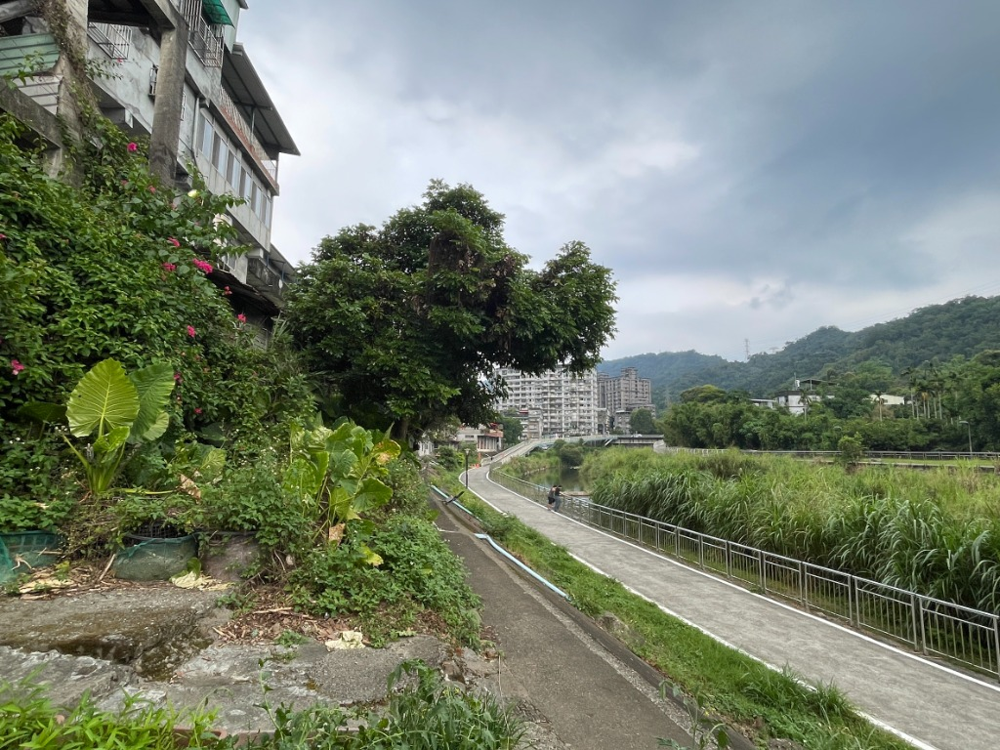
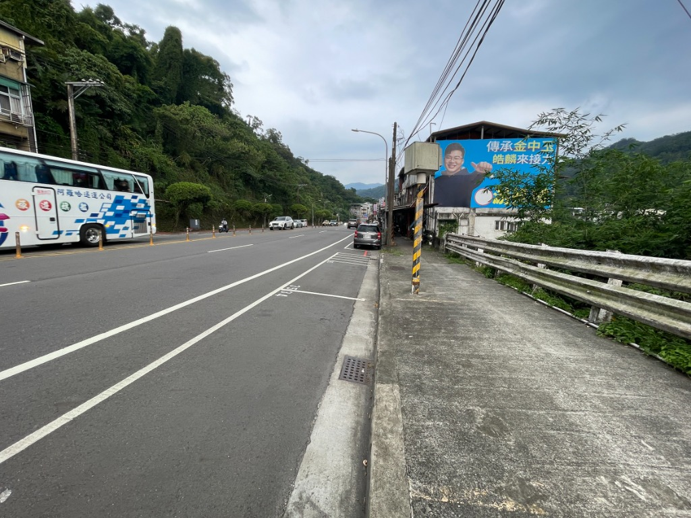
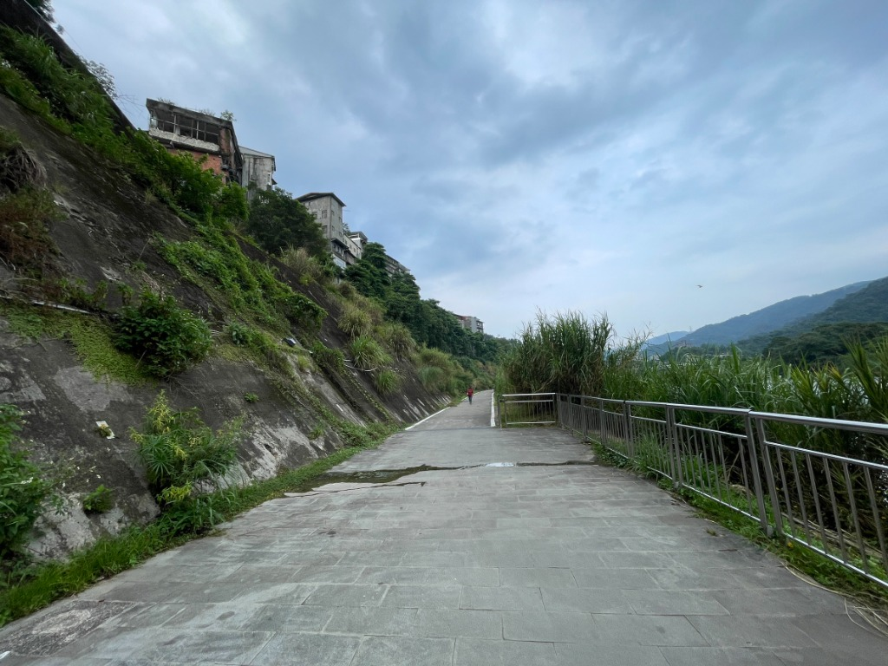
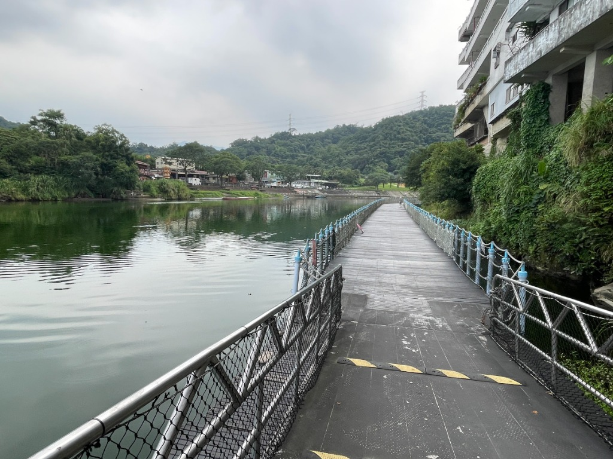

文／賴玉芳
新店捷運站、新店老街一帶至青潭之間的廊帶，依山臨水，位處臺北盆地通往烏來與坪林山區的咽喉要道。這段短短兩公里的路程，看似短暫，卻濃縮了臺灣交通與空間發展的重要歷程，其演變正是臺灣從拓墾邊區、產業現代化到綠色休閒時代的縮影。
以下將從防禦、水利、產業運輸、現代公路與生態休閒五個歷史層次，探討這段交通廊帶百餘年來的發展與變遷。
一、衝突與防禦的起點：清代古道與隘勇線
清代中葉以前，新店溪與青潭溪交會一帶仍屬以泰雅族為主的原住民族活動範圍。隨著漢人移墾逐漸深入山區，地勢險要的青潭成為官府與設置土牛溝地界。
空間特質：當時的道路並非以經濟運輸為主要目的，而是肩負防禦與拓墾的功能。從新店街通往青潭的古道，沿山腳蜿蜒而行，是一條兼具警戒與通行功能的「隘勇路」，也是漢人聚落與原住民族活動範圍之間的重要界線。
歷史意義：青潭一帶曾設有規模較大的隘口，周邊建築多為防禦性的寮舍與土牆。這條因防衛需求而形成的山邊古道，奠定了日後新店至坪林交通路線的基本雛形。
二、生存與農業的命脈：大坪林圳的開鑿
在拓墾逐漸穩定後，農業生產成為地方發展的核心。為灌溉大坪林五庄廣大的農田，乾隆年間墾戶開始興建大坪林圳，其取水口設於青潭溪與新店溪交會處附近。
水利與交通的交織：為將溪水引入下游農田，打石匠在青潭與新店之間陡峭的岩壁間開鑿渠道、引水石硿設施。這些工程不僅展現早期水利技術，也形塑出另一種特殊的交通空間。
空間影響：沿著水圳興建的巡圳路與維修通道，成為早期居民巡查、維護灌溉設施的重要路徑。除了山邊古道之外，這些緊鄰水線的圳路，也構成在此狹長廊帶中的另一條重要通行系統。人們若不行山區崎嶇山路，取捷徑壯著膽子走在水流湍急的引水渠道旁。

三、產業現代化的骨幹：景尾龜山道與周再思台車道
進入日治時期後，新店至青潭一帶迎來劇烈的產業轉型。隨著樟腦、茶葉、煤礦等產業蓬勃發展，以及龜山發電所、小粗坑發電所等大型建設陸續興建，現代化軌道運輸系統開始進入這條山水廊帶。
景尾龜山道：日治時期修築的景尾龜山道，自景美、新店一路延伸至龜山，取代原本崎嶇難行的山徑古道，大幅提升了新店至青潭之間的人員與物資運輸效率。
周再思台車道（磺窟線）：1920年代，煤礦業者周再思為運送礦產，興建由現今捷運新店站附近通往青潭、廣興一帶的私人輕便車道。這條台車道成為地方煤礦運輸的重要命脈，也帶動沿線產業聚落的發展。
空間景觀：此時的新店至青潭廊帶，呈現出水圳與台車道上下並行的特殊景觀。台車往返穿梭的聲響，象徵著新店地區正式邁入工業化與能源開發的時代。
四、現代化速度的追求：北宜公路的闢建與擴建
第二次世界大戰後，汽車運輸興起。原有的景尾龜山道與輕便道，整併拓寬為現代化公路系統，形成今日的台九線北宜公路。新店至青潭段因此成為臺北通往坪林、宜蘭、及烏來台九甲的重要交通幹道。
空間的轉變：北宜路沿山壁開闢而成，道路線形彎曲、坡度較大，加上車流量持續增加，長期承擔砂石車、貨運車輛及各類機動車交通需求。尤其在假日，更成為重型機車熱門路線之一。
原本與居民生活緊密相連的溪岸與山徑空間，逐漸被高速車流所取代。道路功能高度汽車化後，行人與自行車幾乎失去安全通行的空間，這條歷史悠久的廊帶也一度成為以效率與速度為主導的交通孔道。

五、回歸人本與生態的休閒時代：青潭溪自行車道
進入二十一世紀後，隨著環境保護意識提升，以及大臺北地區推動親水綠帶與自行車路網建設，新店至青潭廊帶再次迎來重大轉變。交通發展的價值取向，開始由追求速度轉向重視生活品質、生態環境與休閒體驗。
青潭溪自行車道與浮筒橋設施：由於北宜路一段沿線路幅狹窄，一側臨山、一側臨溪，拓寬空間有限。為提供行人與自行車安全的通行環境，政府利用河岸空間興建青潭溪自行車道，並設置特色浮筒路段，串聯新店碧潭與青潭地區。

新的交通分工與角色重塑：
- 台九線（北宜路）新店至青潭段持續承擔中長程機動車輛運輸功能。
- 青潭溪自行車道則成為步行者、慢跑者與自行車騎士的專屬路徑，提供安全且舒適的慢行空間。
昔日以防禦、運輸與產業開發為核心的交通走廊，逐漸轉化為兼具交通、景觀與休憩功能的綠色廊道。

結語：一條道路的百年歷史交響
從碧潭到青潭的短短不到兩公里路程，見證了新店百餘年的發展軌跡。
這裡曾是漢人拓墾與原住民族活動範圍交會的邊界，其後又因水圳、煤礦、電力與台車運輸的興起，成為帶動地方產業發展的重要動脈。到了現代，隨著自行車道與親水空間的建設，這條曾經追求速度與效率的交通路線，再度回歸人與自然的連結。
因此，新店碧潭至青潭交通廊帶的變遷，不僅是道路與交通工具演進的歷史，更反映了臺灣社會對於道路功能的理解與期待，已從生存防衛、資源開發與產業運輸，逐步走向永續發展、生活品質與生態共融的新時代。